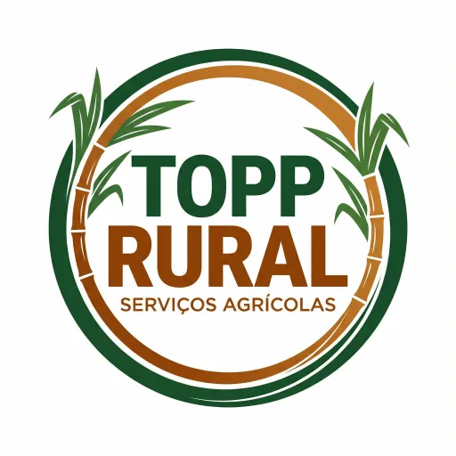

Plantio manual de cana
Plantio preciso e organizado para garantir produtividade.
Solicitar
Plantio de cana com qualidade e eficiência
Negocie seu orçamento direto pelo WhatsApp e garanta o melhor preço para o seu plantio.
Envie seus dados e nossa equipe entra em contato rapidinho.
NEGOCIAR AGORA
A TOPP RURAL é uma empresa especializada em serviços agrícolas, oferecendo mão de obra qualificada para atender produtores rurais com responsabilidade e eficiência.
Trabalhamos com dedicação no campo, garantindo um serviço bem feito, dentro do prazo e com total compromisso com o cliente.
Envie sua área e tipo de serviço, e nossa equipe responde com o melhor orçamento para o seu campo.
NEGOCIAR ORÇAMENTOPlantio preciso e organizado para garantir produtividade.
SolicitarControle de ervas daninhas para campo saudável e produtivo.
SolicitarPreparação completa do terreno para plantio e manutenção.
SolicitarEquipe qualificada para reforçar sua operação no campo.
SolicitarFuncionários registrados e nota fiscal a combinar para maior segurança do seu investimento.
Profissionalismo e organização desde a chegada ao terreno.
Resultados claros com preparo, plantio e manutenção corretos.
Trabalhamos com foco em produtividade e qualidade no plantio.